Inhalt Index DeskTop Bronstein

 Funktionalanalysis Hilbert-Räume Fourier-Reihen im Hilbert-Raum
Funktionalanalysis Hilbert-Räume Fourier-Reihen im Hilbert-Raum


Die FOURIER-Reihe eines beliebigen Elements  konvergiert stets, und zwar zur Projektion des Elements x auf den Teilraum 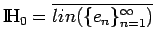. Hat ein Element
konvergiert stets, und zwar zur Projektion des Elements x auf den Teilraum 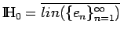. Hat ein Element  die Darstellung 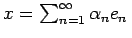, dann sind 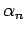 die FOURIER-Koeffizienten von
die Darstellung 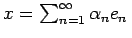, dann sind 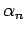 die FOURIER-Koeffizienten von  . Ist 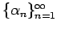 eine beliebige Zahlenfolge mit der Eigenschaft 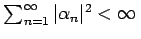, dann existiert in
. Ist 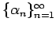 eine beliebige Zahlenfolge mit der Eigenschaft 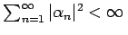, dann existiert in  genau ein Element
genau ein Element  , dessen FOURIER-Koeffizienten gerade die Zahlen sind und für das die Abgeschlossenheitsrelation oder PARSEVALsche Gleichung
, dessen FOURIER-Koeffizienten gerade die Zahlen sind und für das die Abgeschlossenheitsrelation oder PARSEVALsche Gleichung
gilt (Satz von RIESZ-FISCHER).
Ein orthonormales System {en} in  heißt vollständig, wenn es keinen vom Nullvektor verschiedenen Vektor y gibt, der zu allen Vektoren en orthogonal ist; es heißt Basis, wenn jeder Vektor
heißt vollständig, wenn es keinen vom Nullvektor verschiedenen Vektor y gibt, der zu allen Vektoren en orthogonal ist; es heißt Basis, wenn jeder Vektor  als 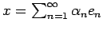 dargestellt werden kann, d.h. 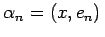, und x ist gleich der Summe seiner FOURIER-Reihe. In letzterem Falle sagt man auch, x hat eine FOURIER-Entwicklung. Die folgenden Aussagen sind äquivalent:
als 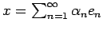 dargestellt werden kann, d.h. 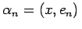, und x ist gleich der Summe seiner FOURIER-Reihe. In letzterem Falle sagt man auch, x hat eine FOURIER-Entwicklung. Die folgenden Aussagen sind äquivalent:
| Beispiel A |
|
Das trigonometrische System (12.119) ist eine Basis im Raum |
| Beispiel B |
|
Das System der normierten LEGENDREschen Polynome (12.122) |